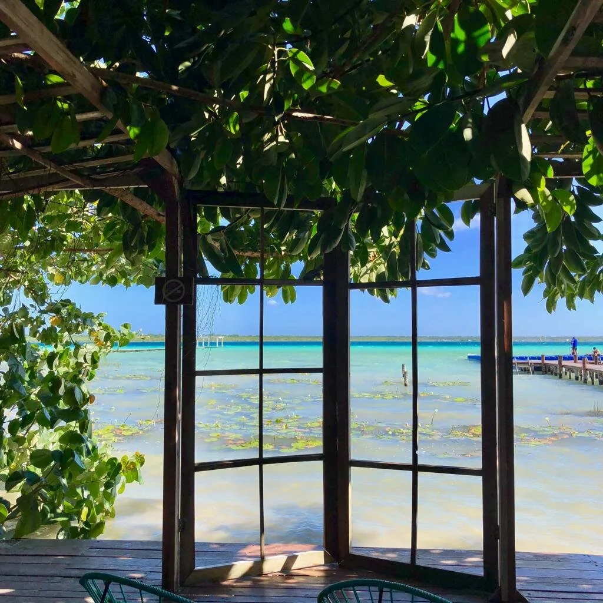

Sargasses en Riviera Maya : comprendre le phénomène pour mieux préparer son voyage
Si vous préparez un séjour en Riviera Maya, vous avez probablement entendu parler des sargasses. Ces algues brunes qui s'échouent parfois sur les plages du Mexique caribéen font partie de la réalité de la région depuis la fin des années 2010. Mais elles ne doivent pas vous décourager : avec les bons conseils et une organisation adaptée, votre séjour sera aussi magnifique qu'attendu.
En tant qu'agence locale basée à Playa del Carmen, nous observons la situation chaque année et adaptons nos excursions en conséquence. Voici notre guide complet, honnête et pratique.

Bacalar et sa lagune aux sept couleurs : une des plus belles alternatives aux plages de la côte lors des épisodes de sargasses.
Qu'est-ce que les sargasses ?
Les sargasses (Sargassum fluitans et Sargassum natans) sont des algues brunes pélagiques qui dérivent naturellement dans l'océan Atlantique. Elles constituent un écosystème marin à part entière, essentiel à de nombreuses espèces marines (tortues, poissons, oiseaux).
Le problème est apparu à grande échelle à partir de 2018 : sous l'effet combiné du réchauffement climatique, de la déforestation amazonienne et de l'enrichissement en nutriments (nitrates, phosphates) des eaux de l'Atlantique Sud, les sargasses se sont mises à proliférer de façon exponentielle dans la ceinture de sargasses des Caraïbes — une zone s'étendant du golfe du Mexique jusqu'aux côtes africaines.
Lorsqu'elles s'échouent sur les plages, les algues dégagent en se décomposant un gaz à l'odeur caractéristique (hydrogène sulfuré) et recouvrent le sable d'un tapis brun peu esthétique. La mer reste néanmoins accessible selon les jours et les vents.
Quand les sargasses arrivent-elles en Riviera Maya ?
Les sargasses sont imprévisibles : leur arrivée dépend des courants marins, des vents et de la météo océanique. Il est donc impossible de garantir une plage totalement exempte d'algues à une date précise. Cela dit, des tendances générales se dégagent d'une année à l'autre.
Jan
Faible
Fév
Faible
Mar
Faible
Avr
Variable
Mai
Variable
Juin
Élevé
Juil
Élevé
Août
Élevé
Sep
Variable
Oct
Variable
Nov
Faible
Déc
Faible
La période idéale pour des plages généralement dégagées reste novembre à mars. Mais même en été, un vent de nord peut nettoyer une plage en quelques heures — tout dépend du jour.
Quelles plages sont les plus touchées ?
Toutes les plages de la Riviera Maya ne sont pas égales face aux sargasses. La géographie locale joue un rôle essentiel : les plages exposées plein est, face aux courants atlantiques, reçoivent davantage d'algues que les plages protégées ou situées au nord.
- Playa del Carmen (5e Avenue, Mamitas Beach) — présence régulière en été, nettoyage municipal quotidien sur les plages fréquentées.
- Tulum — souvent plus touchée que Playa, les courants y amènent davantage de sargasses et les plages sont moins entretenues.
- Akumal — plage relativement protégée par sa forme en baie, souvent moins affectée.
- Xpu-Ha, Paamul — exposées, présence fréquente en saison.
- Playa Norte (Isla Mujeres) — exposition nord, souvent préservée.
- Holbox — côte nord du Yucatán, rarement touchée par les sargasses (golfe du Mexique).
💡 Conseil local
Les équipes municipales de Playa del Carmen nettoient les plages principales chaque matin dès 5h. En arrivant tôt, vous profitez souvent d'une plage propre avant le retour des algues en journée selon les vents.
Comment profiter de la Riviera Maya malgré les sargasses ?
C'est ici que notre connaissance du terrain fait toute la différence. La Riviera Maya est une région d'une richesse exceptionnelle qui va bien au-delà des plages. En cas d'épisode de sargasses, nous réorientons systématiquement nos excursions vers des expériences tout aussi magnifiques — souvent même plus mémorables.
AGUA · Incontournable
Cenotes & Tortues
Les eaux cristallines des cenotes souterrains ne sont jamais affectées par les sargasses. Une expérience aquatique irremplaçable.
AGUA · Lagune
Bacalar
La lagune aux sept couleurs est une eau douce intérieure, totalement préservée des algues — et absolument spectaculaire.
CIELO · Île
Holbox
Sur la côte nord du Yucatán (golfe du Mexique), les plages de sable blanc d'Holbox sont rarement touchées par les sargasses.
AGUA · Récifs
Cozumel
Le côté ouest de l'île, protégé des vents, offre des eaux transparentes et des récifs coralliens souvent épargnés.
CIELO · Réserve UNESCO
Sian Ka'an
Lamantins, crocodiles, piscines naturelles et mangroves : la réserve naturelle offre une immersion hors du temps.
TIERRA · Patrimoine
Chichén Itzá
Les jours de sargasses sont idéaux pour explorer les sites archéologiques mayas loin de la plage — et sans regret !
Nos conseils pratiques pour votre séjour
Voici ce que nous recommandons systématiquement à nos clients pour vivre un séjour serein quelle que soit la situation :
- Restez flexible sur vos activités : si la plage est touchée un matin, partez en excursion cenote ou visite de site maya ce jour-là. La situation évolue rapidement.
- Consultez les alertes locales : des applications et pages Facebook surveillent la situation en temps réel (Sargasso Report, groupes de voyageurs francophones en Riviera Maya).
- Privilégiez les plages de resort : les hôtels avec front de mer disposent d'équipes qui nettoient les algues en continu — leur accès est parfois payant mais ça vaut le détour.
- Allez tôt le matin : le nettoyage nocturne et les vents matinaux rendent souvent les plages plus propres avant 9h.
- Ne renoncez pas aux activités aquatiques : les cenotes, la lagune de Bacalar, Holbox et les récifs de Cozumel restent magnifiques quelle que soit la saison.
- Parlez-en à votre agence : nous adaptons le programme de votre séjour au jour le jour selon la situation réelle, sans frais supplémentaires.
🐢 Bon à savoir
Les tortues marines pondent leurs œufs sur les plages de Riviera Maya entre mai et octobre — précisément lors des épisodes de sargasses. Les algues jouent d'ailleurs un rôle de protection naturelle pour leurs nids. Un phénomène naturel, mais fascinant à observer de nuit avec un guide agréé.
Notre position en tant qu'agence locale
Chez Havantures Caribe, nous ne promettons pas une plage sans sargasse — ce serait vous mentir. Ce que nous promettons, c'est de vous accompagner pour que votre séjour soit toujours beau, toujours mémorable.
Nous vivons ici. Nous connaissons chaque plage, chaque cenote, chaque alternative. Et nous adaptons chaque programme avec honnêteté et souplesse. Les sargasses font partie de la réalité de la Riviera Maya — mais elles ne peuvent pas effacer la beauté de Chichén Itzá, la magie d'un cenote souterrain ou la sérénité de la lagune de Bacalar.
"Nous vivons où vous partez en vacances. Quand les sargasses arrivent, nous avons toujours une alternative plus belle encore à vous proposer."
Préparez votre voyage avec nos conseils locaux
Devis gratuit · Réponse sous 48h · En français depuis Playa del Carmen